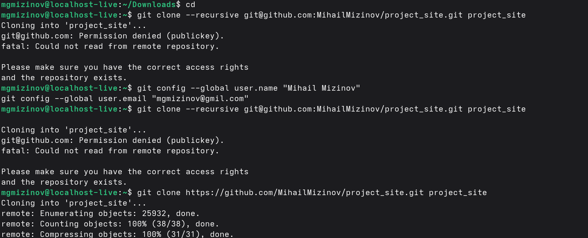
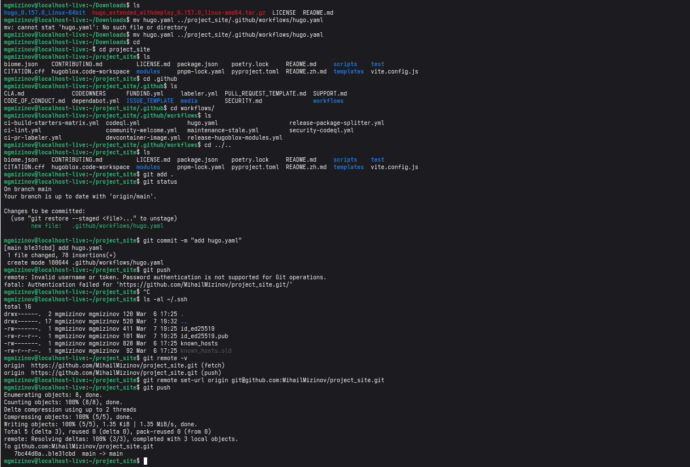

Индивидуальный проект часть 1
Выполнил Мизинов Михаил НКАбд-04-25
Цель работы
Размещение на Github pages заготовки для персонального сайта.
Выполнение работы
Установка hugo и клонирование репозитория.

Риcунок 1 - Установка hugo и клонирование репозитория
Загрузка hugo.yaml

Риcунок 2 - Загрузка hugo.yaml
Запуск сайта
Риcунок 3 - Запуск сайта
Вывод
Разместил на Github pages заготовки для персонального сайта.